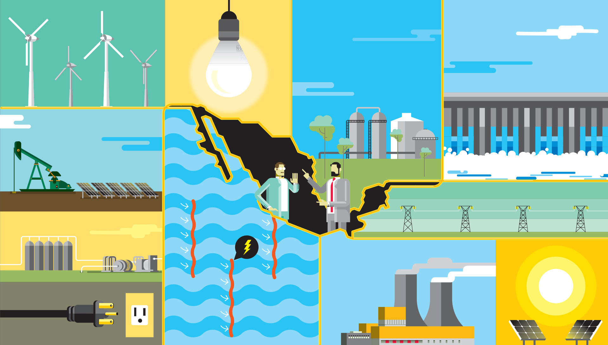
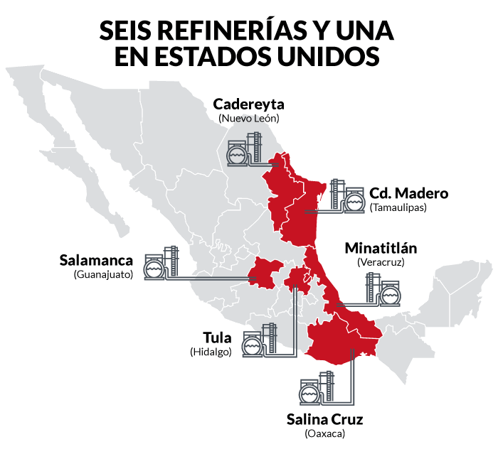
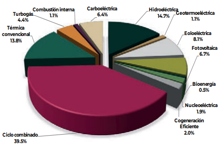

Sector Energético:
Escrito por: Observatorio ING staff. Publicación: 08/09/2021Este artículo tiene como objetivo informar temas relacionados con la corrupción en el sector energético mexicano, examinando los diversos casos por parte del sector público como es PEMEX (Petróleos Mexicanos), CFE (Comisión Federal de Electricidad) y el sector privado, que corresponde a empresas independientes.
Los tres principales riesgos de corrupción del sector energético son por: la falta de leyes secundarias del sistema nacional anticorrupción, preparación ante proyectos grandes de infraestructura y ausencia de cultura ética corporativa. La falta de ética profesional permite que tanto empresas privadas como el sector público tengan un interés económico fuera de la profesionalidad y del servicio, evitando un desarrollo tecnológico, una competitividad y un estrago en la economía mexicana.
Primero un breve resumen acerca de la capacidad instalada en el país.
Fig 1. Capacidad eléctrica de México [11]
México cuenta con seis refinerías; Salamanca, Minatitlán, Madero, Cadereyta, Salina Cruz y Tula, actualmente se encuentra con la construcción de Dos Bocas en Tabasco y está completa la compra de la refinería Deer Park, en Texas a la petrolera Shell.
Fig 2. Refinerías de PEMEX [1]
Se espera se agregue a las filas la refinería Dos Bocas para julio de 2021.
CFE
México cuenta con las siguientes tecnologías para la generación de electricidad, las cuales son ciclo combinado, turbogas, combustión interna, carboeléctrica, hidroeléctrica, fotovoltaica, energía nuclear, etc. Teniendo una producción energética de 236,628 (GWh). [2]
Fig. Capacidad instalada por tecnología a octubre 2020 [2]
Corrupción dentro de Pémex- El exdirector de Petróleos Mexicanos, Emilio Lozoya, fue extraditado el 17 de julio de 2020 de España a México acusado de recibir sobornos del conglomerado brasileño Odebrecht y además el exdirector de PEMEX acusa de corrupción a 16 políticos durante su gestión en donde se encuentran tres ex presidentes mexicanos; Enrique Peña Nieto, Felipe Calderón y Carlos Salinas de Gortari. [3]
- Para la construcción de la refinería de Dos Bocas, en Tabasco, PEMEX realizó la invitación a compañías acusadas por actos de corrupción, a pesar de que el actual presidente de México Andrés Manuel Lopez Obrador mencionó que no participan empresas internacionales con antecedentes delictivos. Las compañías seleccionadas fueron Technip, KBR y los consorcios Bechtel-Techint y WorleyParsons-Jacobs. [4]
- La comercializadora de energéticos a nivel mundial Vitol, tiene relación de eventos ilegales con funcionarios de Petróleos Mexicanos esto durante los gobiernos de Enrique Peña Nieto y el actual presidente de la república. El Departamento de Justicia de Estados Unidos reveló que la compañía acordó pagar 163 millones de dólares con las autoridades estadounidenses y brasileñas por actos de corrupción en las petroleras estatales Petrobras, Petroecuador y Pemex. La empresa mundial pagó sobornos a funcionarios en Brasil, Ecuador y México para ganar contratos lucrativos y obtener ventajas competitivas. [5]
- La empresa Viton en 2018 realizó pagos ilegales por dos millones de dólares para obtener contratos con la subsidiaria Pemex. Para ello creó dos entidades mexicanas para ejecutar acuerdos de falsas consultorías con compañías fantasma controladas por un intermediario. Vitol provocó que las entidades crearán facturas falsas que la comercializadora envió al intermediario y las usó para justificar los pagos, mientras que el intermediario, cuyo nombre no se menciona, transfirió los sobornos a cuentas controladas por las entidades mexicanas dirigidos al funcionario mexicano. [5]
- Con la compra de la refinería Deer Park en Texas por parte de PEMEX, el congresista Brian Babin de Estados Unidos pidió al gobierno estadounidense de Joe Biden negar la venta a Petroleos Mexicanos, debido a que menciona que “Pemex ha mostrado un largo patrón infame de negociaciones contractuales, corrupción generalizada, incluidos sobornos y tácticas descritas por sus víctimas como ‘terrorismo financiero'”. [6]
- De acuerdo con el INAI, en los últimos 15 años, más de 40 funcionarios de la CFE han recibido multas de la SFP por participar en actos de corrupción. Éstas suman más de 80 millones de dólares. [7]
- La empresa Withewater Midstream que firmó tres contratos entre 2016 y 2017 con CFE para la comercialización de gas se encuentra bajo investigación en México y EUA por entrega de contratos bajo sospecha de corrupción, abuso de confianza y tráfico de influencias. [8]
- De acuerdo con el director de la Comisión Federal de Electricidad (CFE), aseguró que las acusaciones hacía él por corrupción son solo porque la empresa estatal “el gran pastel de la corrupción, que estaba lleno de ladrones que se dividían 150 mil millones al año y por eso no quieren que ponga orden”. [9]
La corrupción dentro de PEMEX, CFE y la Secretaría de Energía, ha logrado la desviación de recursos públicos para un beneficio y en momento de pandemia estos efectos e intereses afectan a miles de mexicanos. En PEMEX continúa la corrupción, la deuda sigue creciendo y con el freno de la inversión privada en el sector petrolero. Los intereses públicos impiden una mayor producción de gasolina y de gas. Un ejemplo de esto es que el gobierno mexicano gasta más dólares en importar derivados del petróleo, que lo que recibe por exportaciones de crudo. Por parte de la CFE, las pérdidas crecen y la necesidad de subsidios aumenta. Además de la decisión de obstaculizar la inversión privada de energía limpia, el gobierno busca aprobar una ley que regresa al sector energético al monopolio total del Estado, como el siglo pasado con el PRI. Esto implica más contaminación, mayores costos y posible escasez de electricidad, que generaría apagones en un futuro próximo. [10]
Esto y más ha afectado a la economía mexicana, a la implementación de tecnologías limpias y a la ética profesional para llevar a cabo procesos energéticos que influyen en los sectores de salud, transporte, industrial, educativo y económico.
Referencias:
[1] Ramirez C. V. Refinerías en México. Ingeniería de Proyectos. Recuperado de https://sites.google.com/site/veronicacolohuaramirez/actividades/refinerias-en-mexico
[2] PROSEDEN. Capítulo 4 Infraestructura del Sistema Eléctrico Nacional. SENER.
[3] El País. El exjefe de Pemex amplía las acusaciones de corrupción a tres expresidentes mexicanos. Recuperado de https://cincodias.elpais.com/cincodias/2020/08/20/companias/1597952375_022313.html
[4] Solís A. (2019). Para construir refinería, Pemex invitó a empresas acusadas de corrupción. Forbes. Recuperado de https://www.forbes.com.mx/empresas-que-pemex-quiere-que-construyan-refineria-ha-sido-acusadas-por-corrupcion/
[5] Solís A. (2020). Este gigante energético sobornó a funcionarios de Pemex con Peña Nieto y AMLO. Forbes. Recuperado de https://www.forbes.com.mx/negocios-vitol-sobornos-funcionarios-pemex-pena-nieto-amlo/
[6] Solís A. (2021). Congresista de EU pide negar venta de refinería Deer Park a Pemex. Forbes. Recuperado de https://www.forbes.com.mx/congresista-eu-negar-venta-deer-park-pemex/
[7] Guerrero T. P. (2015). Corrupción en el Sector Energético Mexicano: Propuestas y Recomendaciones. Wilson Center.
[8] Cota I. (2021). México y EE UU investigan posible corrupción en contratos entre CFE y Whitewater Midstream. El País. Recuperado de https://elpais.com/mexico/2021-07-17/mexico-y-ee-uu-investigan-posible-corrupcion-en-contratos-entre-cfe-y-whitewater-midstream.html
[9] Vega C. (2020). CFE era el gran pastel de la corrupción: Bartlett. Milenio. Recuperado de https://www.milenio.com/politica/cfe-era-el-gran-pastel-de-la-corrupcion-bartlett
[10] Pazos L. (2021). Pemex y CFE quiebran a México. El Financiero. Recuperado de https://www.elfinanciero.com.mx/opinion/luis-pazos/pemex-y-cfe-quiebran-a-mexico/
[11> Graham, D. (2020). Mexican private sector pitches $92 billion in energy investment. Recuperado de: https://www.theyucatantimes.com/2020/03/reuters-exclusive-mexican-private-sector-pitches-92-billion-in-energy-investment/